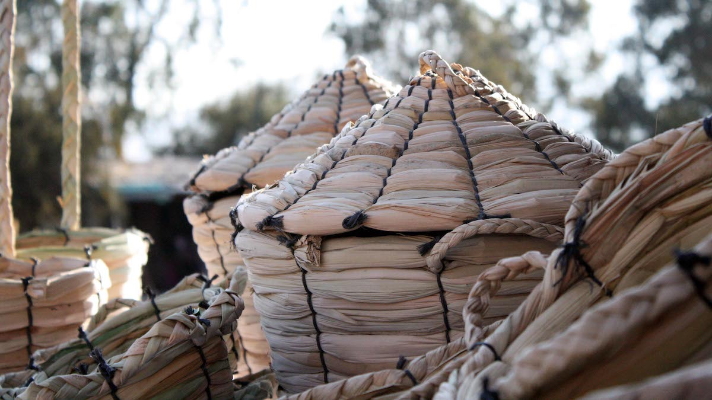
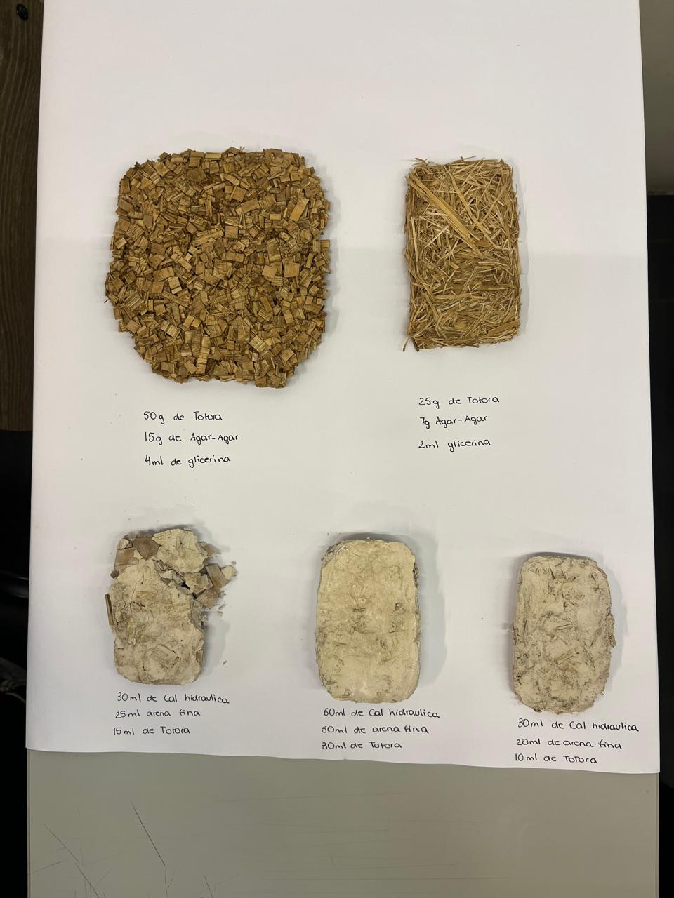
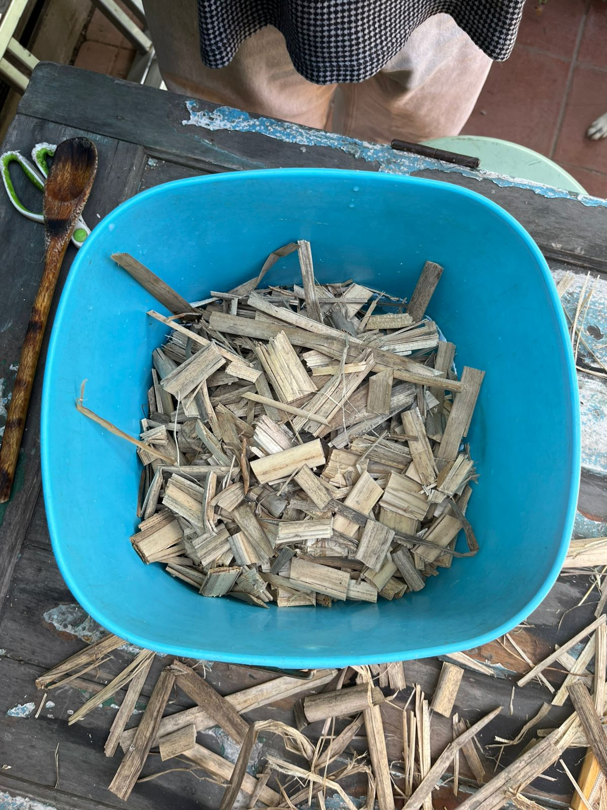

Baja Toraplex es sensible a la humedad porque está compuesto de totora, gelatina y glicerina, materiales que absorben y se degradan con el agua. Esto afecta su forma, firmeza y durabilidad, por lo que debe sellarse o impermeabilizarse para aplicaciones más exigentes.

TORAPLEX
Diseñando desde la materia
biomaterial experimental hecho a partir de totora seca y residuos del trabajo artesanal de totoreros.



¿Qué es Toraplex?
Toraplex es un biomaterial experimental desarrollado a partir de totora seca y residuos del trabajo de los totoreros locales. Su objetivo es convertir la materia del humedal en una herramienta educativa y ecológica que visibilice el valor del territorio.
¿Cuáles son sus PROPIEDADES?
-

-
Baja Al ser un biomaterial orgánico, puede quemarse o deformarse con altas temperaturas. No resiste el fuego de manera natural, por lo que no es adecuado para entornos con riesgo térmico sin tratamientos ignífugos.

-
Media Tiene una resistencia aceptable frente a golpes o presión leve, pero no soporta cargas estructurales. Su dureza moderada permite manipulación en láminas sin romperse fácilmente, pero si se exige mucho esfuerzo mecánico, se fisura.
 -
Media/baja Aunque no es completamente rígido, se quiebra si se dobla en exceso. Puede adaptarse a formas planas o curvas suaves, pero no permite grandes deformaciones, lo que limita su uso en geometrías complejas.

PROCESO DE ELABORACIÓN
Toraflex se elabora mezclando totora seca con gelatina, glicerina y benzoato de sodio. Su estado fibroso la vuelve más rígida, y un secado cuidadoso asegura cohesión y durabilidad.
PASO 1
0:00–3:00 Calentar agua y añadir gelatina poco a poco, revolviendo siempre para evitar grumos.
PASO 2
8:00 Incorporar glicerina con cuidado, manteniendo agitación constante, evitando burbujas.
PASO 3
10:00 Añadir benzoato de sodio espolvoreado y mezclar bien hasta lograr completa disolución.
PASO 4
12:00 Agregar totora molida por porciones y batir más rápido hasta obtener mezcla uniforme.
PASO 5
15:00 Verter la mezcla en el molde y esparcir bien para lograr una capa pareja y estable.
PASO 6
24h Secado inicial dejando el molde ventilado sin sol directo, evitando humedad y acumulación.
PASO 7
Día 2 Desmoldar con cuidado y prensar entre planchas lisas aplicando peso firme y uniforme.
PASO 8
2 semanas Mantener el material prensado en lugar fresco revisando planitud diaria hasta secado.
En este apartado puedes explicar de forma más detallada qué es el biomaterial: composición, proceso de fabricación y su relación con el territorio y la comunidad. Idealmente 2–3 párrafos cortos.